Vanessa
Desde muy pequeña crecí rodeada de animales, algo que marcó mucho mi forma de ser. Pasaba gran parte de mi tiempo con mis mascotas y aprendí a desarrollar un gran cariño y respeto por los animales. Mi familia siempre me cuenta que era una niña muy curiosa, observadora e inteligente, con muchas ganas de entender cómo funcionaban las cosas. También dicen que tenía un carácter fuerte desde temprana edad: no solía llorar con facilidad y, cuando me proponía algo, era difícil hacerme cambiar de opinión. Creo que esa combinación de curiosidad, determinación y amor por los animales me ayudó a formar gran parte de la persona que soy hoy.

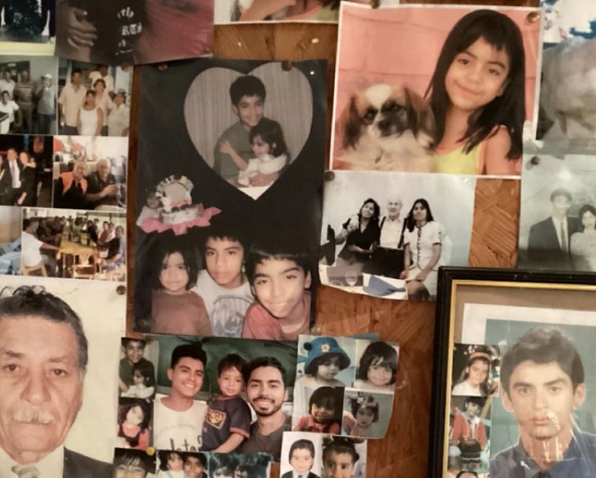
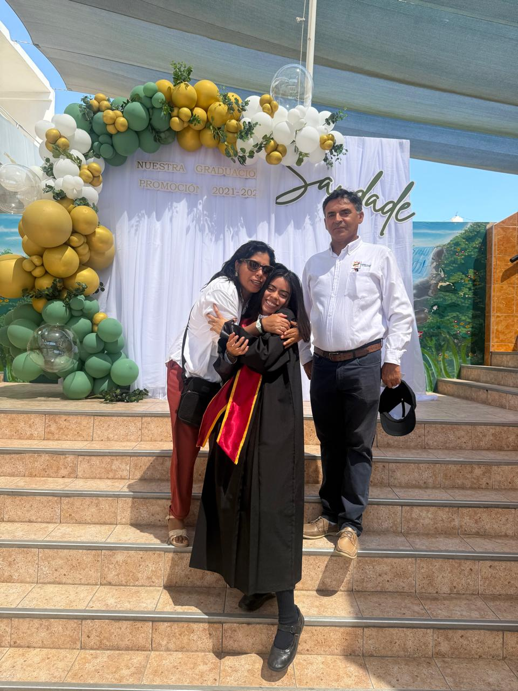
Mis Relaciones
Mis Amigos
En cuanto a mis relaciones personales, no tengo muchos amigos, pero los que tengo son personas muy importantes para mí. Valoro mucho la amistad, la confianza y la lealtad. Considero que una de mis fortalezas es que suelo conectar fácilmente con las personas y crear vínculos genuinos incluso en poco tiempo. Si tuviera que describirme en pocas palabras, diría que soy una persona perseverante, curiosa, apasionada por aprender, cercana con quienes me rodean y con muchas ganas de vivir experiencias que me permitan crecer. Tengo muchos sueños por cumplir, muchas metas por alcanzar y, por supuesto, muchas aventuras y locuras por vivir en el camino.
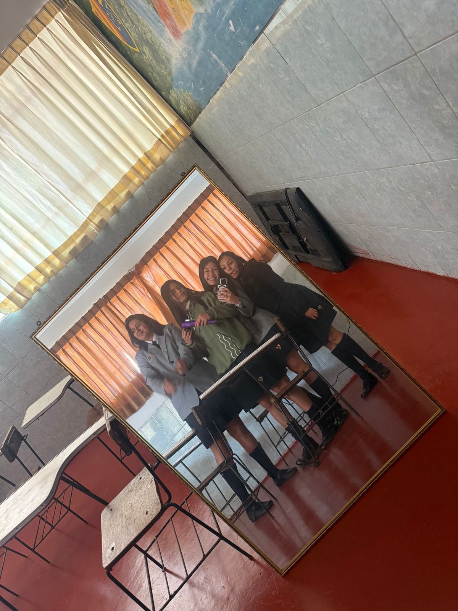

Mis estudios
Mis Cursos - Profesores
Introducción a la Computación - Ernesto Cuadros Vargas -

Fundamentos de Programación - Julissa Villanueva Llerena -

Comunicación - Angel Rodríguez Cruz -

Lógica - Kristel Gisselle Loayza Cru -

Introducción a la Vida Universitaria - Gabriela Ponce Reinoso -

Fundamentos Matemáticos para la Programación - Luis Fernando Díaz Basurco -

Mis Talentos
Académico
NOTAS DEL COLEGIO - Colegio de JesúsEn el ámbito académico, siempre me he esforzado por dar lo mejor de mí. Durante mi etapa escolar logré mantenerme entre los primeros puestos, alcanzando el segundo lugar de mi promoción. Además, siempre he tenido interés por aprender IDIOMAS, por lo que también estudié inglés y francés. Aprender nuevos idiomas me permitió ampliar mi visión del mundo, desarrollar nuevas habilidades de comunicación y prepararme mejor para los retos académicos y profesionales que deseo enfrentar en el futuro.
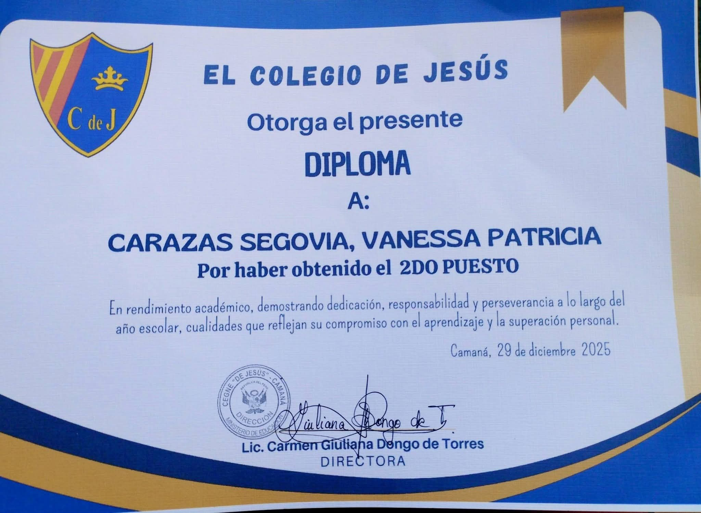
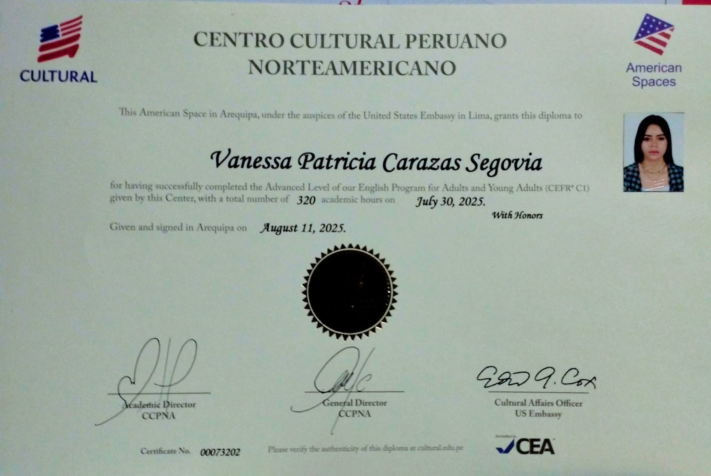
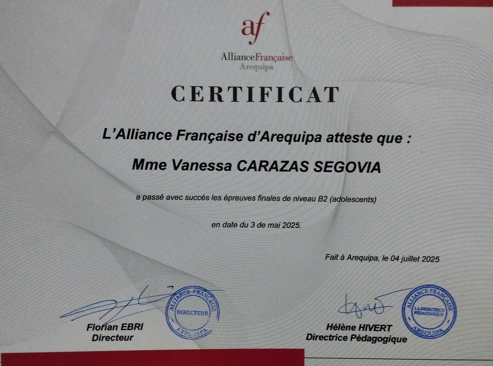
Deportes
VOLEY

TAEKWONDO
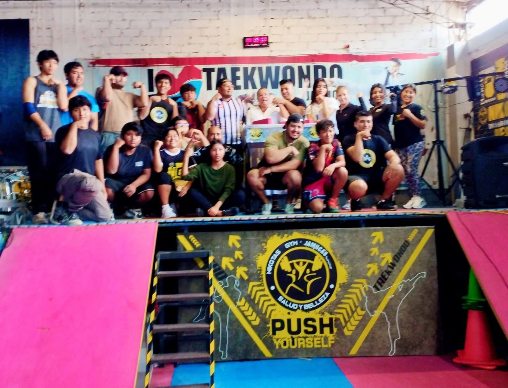
AJEDREZ
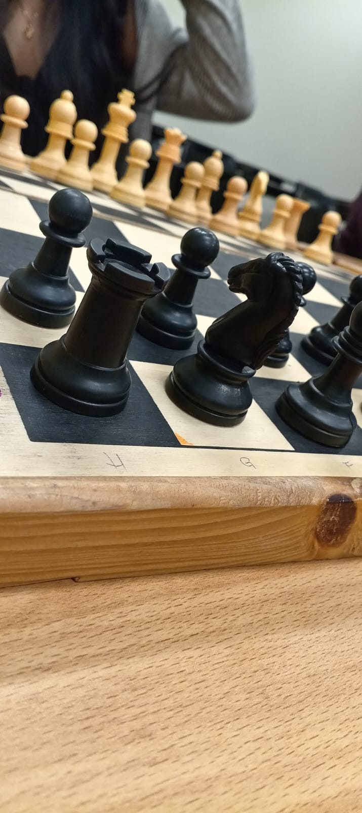
NATACIÓN
ATLETISMO
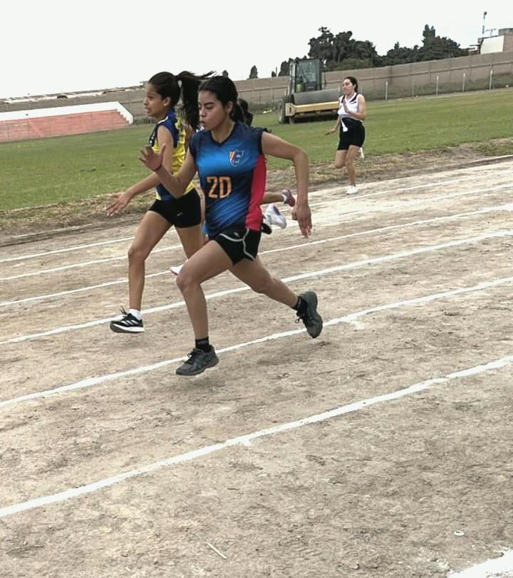
BODYBOARDING
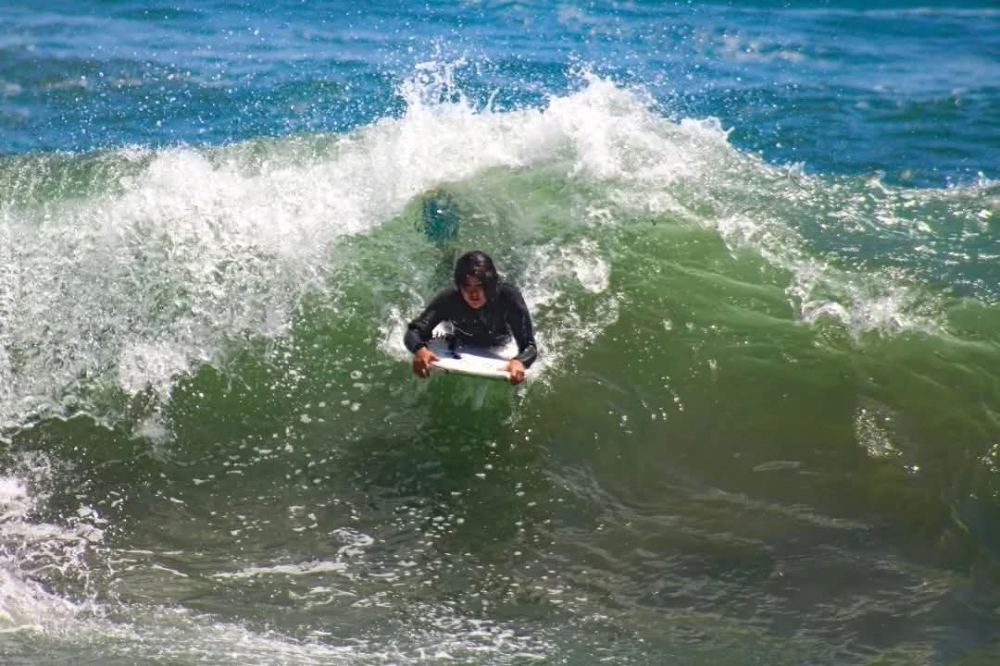
PING PONG
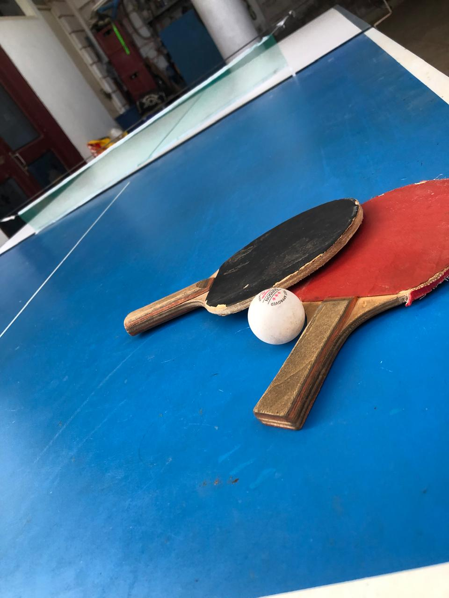
BILLAR
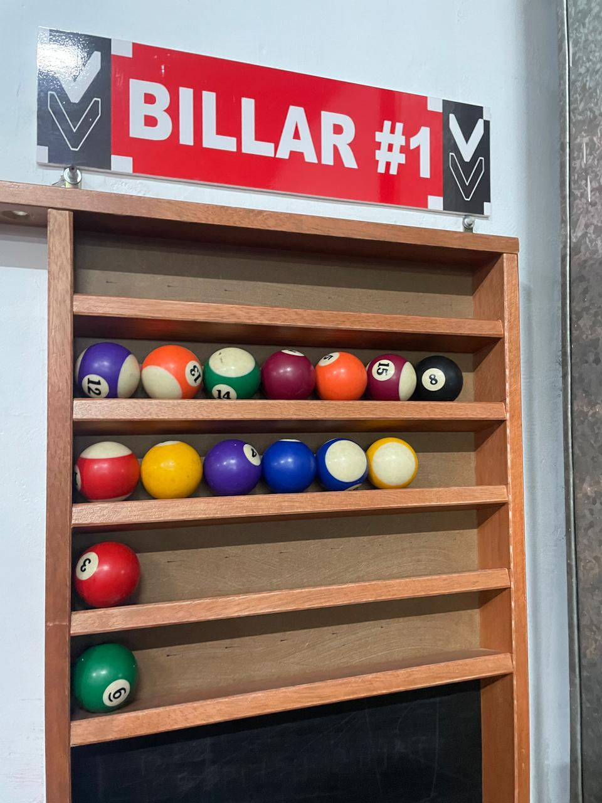
Arte
MúsicaSAXOFÓN
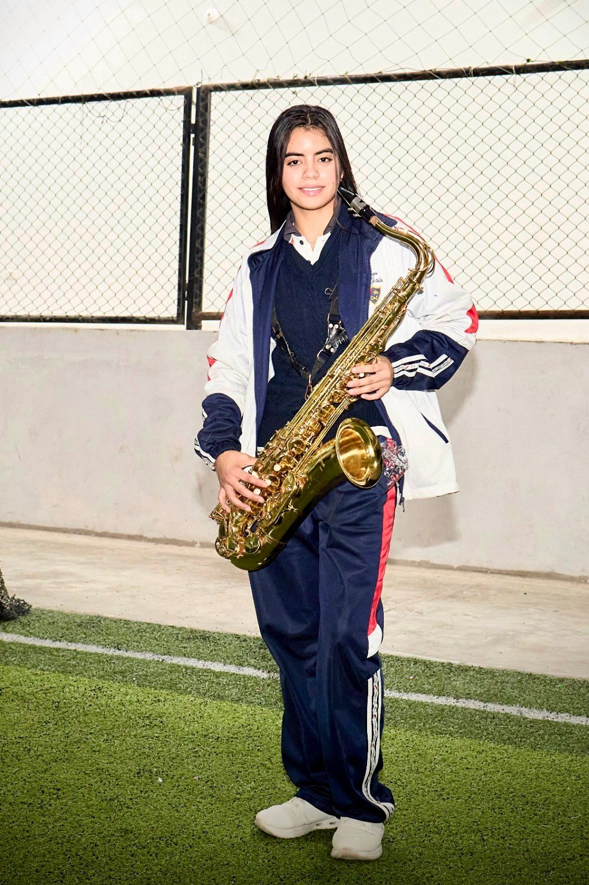
VIOLÍN
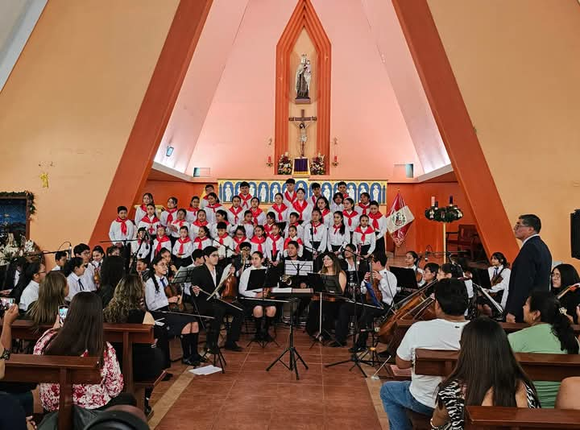
CANTO
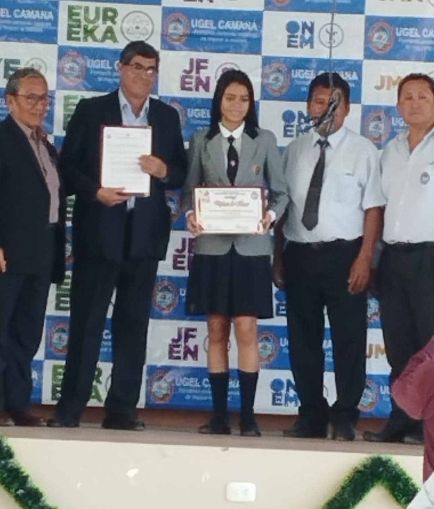
ACTUACIÓN